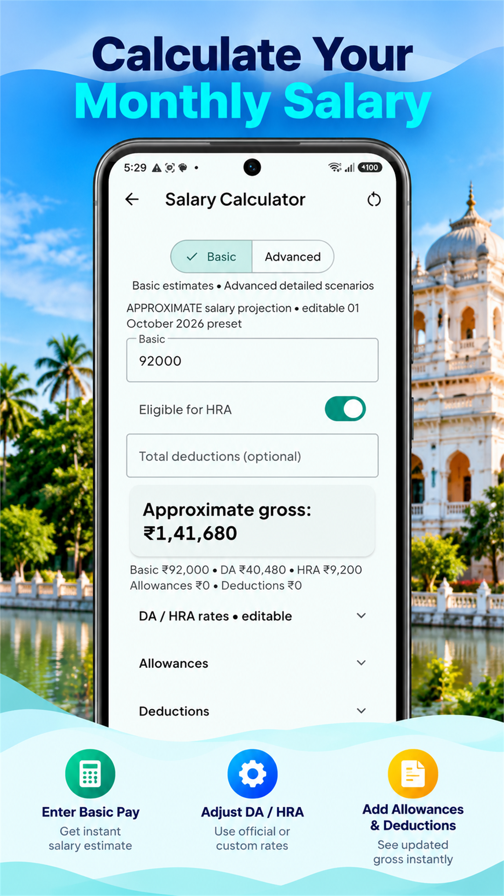
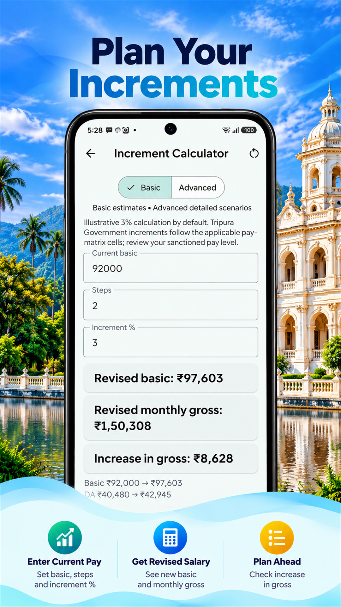
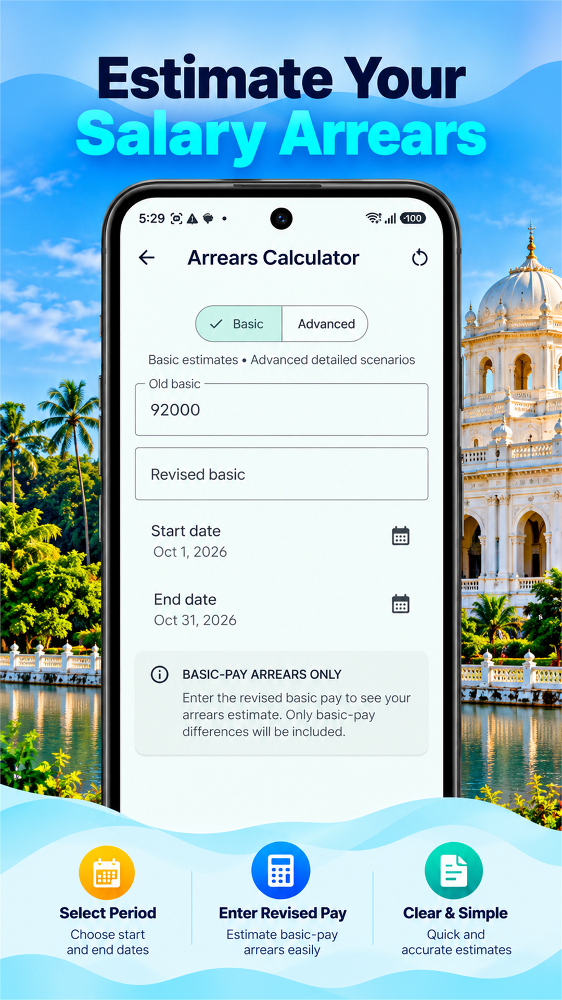
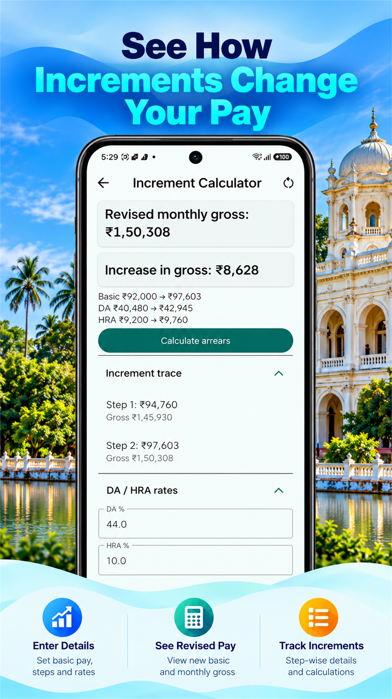
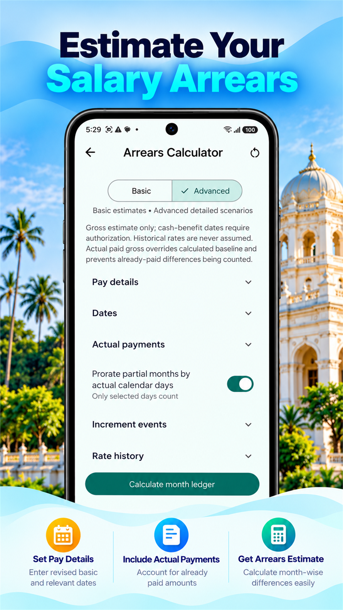

Estimate monthly pay using salary components and deductions.
← All products
Android · Closed testing
Tripura PayCalc
Estimate Tripura government salary, increments and arrears with focused Android tools.
What it does
Focused tools for the job.
Salary planning and estimates for Tripura government employees.
Explore the effect of increments on pay.
Estimate arrears for retrospective salary changes.
Review calculated pay changes.
Model more detailed arrears scenarios.
Tailor estimates to your own pay situation.
Inside the product
See the workflow.
Google Play listing previews.





Availability
Currently in closed testing.
Tripura PayCalc is being prepared for wider Android release. Public Google Play availability has not yet been confirmed. Estimates should be checked against official pay orders and payslips. This is not an official Government of Tripura app.